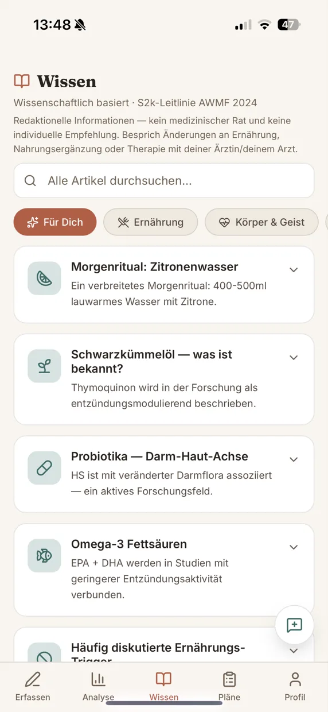
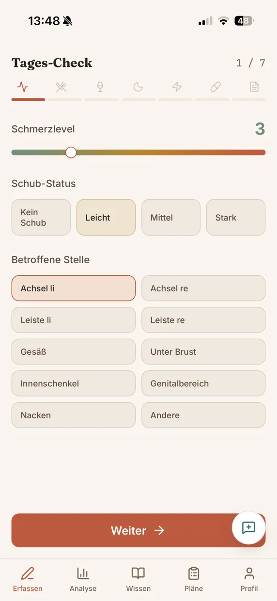

Tracken
Schmerz, Schub, Schlaf, Essen, Stress – in einem kurzen Tages-Check festgehalten. Schneller als eine Sprachnachricht, auch offline.
Für Menschen mit Akne inversa (HS)
Du ahnst, dass irgendwas deine Schübe auslöst – aber was? Halt deine Tage in 30 Sekunden fest und finde in deinem Tempo heraus, welche Muster wirklich in deinen Daten stecken.


Vielleicht kennst du das: Der nächste Schub kommt, wann er will – und du suchst hinterher im Nebel nach dem, was ihn ausgelöst haben könnte. War es das Essen? Der Stress? Die Nacht mit vier Stunden Schlaf?
Und dann sitzt du zehn Minuten in der Sprechstunde und sollst aus dem Kopf wissen, wie die letzten drei Monate wirklich waren. Akne inversa ist eine medizinische Erkrankung. Kein Hygieneproblem. Nicht deine Schuld.
Jeder sagt etwas anderes. Ernährung, Foren, Ratgeber. Aber niemand von ihnen kennt deine Tage.
So wird aus Bauchgefühl ein Muster
Schmerz, Schub, Schlaf, Essen, Stress – in einem kurzen Tages-Check festgehalten. Schneller als eine Sprachnachricht, auch offline.
Viele Auslöser wirken erst ein bis drei Tage später. Die Analyse rechnet diesen Zeitversatz mit ein, prüft Störfaktoren und zeigt deinen IHS4-Verlauf.
Dein Verlauf, der DLQI und auffällige Muster als übersichtliches PDF – damit die zehn Minuten Sprechstunde zählen.
Zeigt Korrelationen, keine Diagnosen. Was auffällt, besprichst du mit deiner Ärztin oder deinem Arzt.
Deine Daten
Konto- und Gesundheitsdaten liegen in Deutschland. Zugriff hat nur dein Konto.
Keine Werbung, keine Analytics-Cookies, kein Datenverkauf hinter deinem Rücken.
Ein Klick im Profil löscht dein Konto mit allen Daten. Vorher kannst du alles als Backup exportieren.
Wissensinhalte und Scores (IHS4, DLQI) orientieren sich an der S2k-Leitlinie HS/Akne inversa (AWMF 2024).
My Skin Warrior ist ein Dokumentations- und Selbstbeobachtungs-Tool und kein Medizinprodukt. Es stellt keine Diagnosen und ersetzt keine ärztliche Beratung oder Behandlung.
Frei zugänglich
Was die Forschung zu Ernährung, Rauchen, Schlaf und Therapieoptionen sagt – redaktionell aufbereitet und an der S2k-Leitlinie orientiert. Kein medizinischer Rat, aber ein ehrlicher Überblick.
Zum Wissensbereich →Zum Beispiel
Die Hefte
Neben der App gibt es die Reihe: über Nähe, Geruch, Scham, Schuld und das Alleinsein. Keine Ratgeber – eher ein Brief von jemandem, der es kennt. Heft 01 ist gratis.
 Gratis
Gratis


Die komplette Reihe
Fünf Hefte über die Dinge, die im Sprechzimmer keinen Platz haben: Nähe, Geruch, Scham, Schuld und das Alleinsein. Ehrlich geschrieben, ruhig gestaltet.
Gratis reinlesen
„Näher, als du denkst" handelt von Nähe, Liebe und Berührung, wenn deine Haut gerade nicht mitspielt. Lad es dir kostenlos als PDF herunter.
Hörprobe – die erste Seite, vorgelesen
Heft 01 · Gratis
Kein Spam, kein Newsletter. Nur dein Gratis-Heft. Datenschutz
Klick auf den Button, um „Näher, als du denkst" herunterzuladen.
PDF herunterladen
Warum es das gibt
Hinter My Skin Warrior steht kein Pharma-Unternehmen und keine Klinik, sondern ein Mensch, der selbst mit Akne inversa lebt. Die Hefte sind aus den Nächten entstanden, in denen es nichts zu lesen gab, das sich nicht wie ein Beipackzettel anfühlte.
Die App kam dazu, weil ich Muster wollte statt Ratlosigkeit. Also habe ich mir das Werkzeug gebaut, das ich selbst gesucht habe – und benutze es jeden Tag.
Ich wollte das, was es nicht gab, als ich es am meisten gebraucht hätte.
Meine Geschichte lesenStimmen aus der Community
Anonyme Stimmen aus der Community.
„Zum ersten Mal hatte ich das Gefühl, dass jemand genau versteht, was in meinem Kopf passiert."
„Ich hab beim Lesen geweint. Aber zum ersten Mal nicht aus Scham, sondern aus Erleichterung."
„Endlich Worte für etwas, das ich seit Jahren niemandem erklären konnte."
„Das hätte ich gebraucht, als alles anfing. Es nimmt einem nicht die Krankheit, aber ein Stück von der Einsamkeit."
„Ruhig, ehrlich, ohne diesen aufgesetzten Optimismus. Genau das hat mir gefehlt."
FAQ
Nicht zu kompliziert, nicht zu empfindlich, nicht zu schwierig. Du lebst mit etwas Schwerem – und du machst das gut. Fang heute an, dich selbst zu verstehen.
Kostenlos, werbefrei, in zwei Minuten eingerichtet.